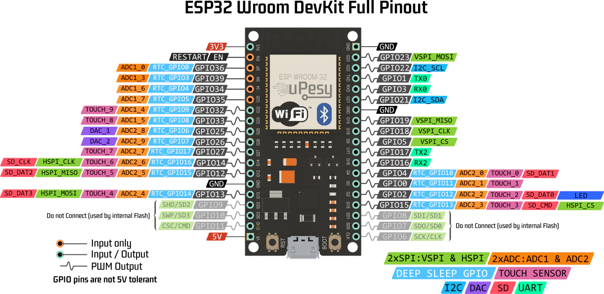

Gemelo Digital
Para trabajara en el gemelo difital se plantea el uso de una ESP32 para el control de motores a paso Nema 17 y el archivo URDF del robot generado previamente.
URFD y ESP32
Control de Motor Paso a Paso NEMA 17 con ESP32 y A4988
Especificaciones Generales
¿Qué es un paso?
Un motor NEMA 17 típico tiene 200 pasos por vuelta, es decir: ( 1.8° ) por paso en modo paso completo.
En microstepping, se subdividen los pasos para mayor precisión.
Microstepping |
Pasos por vuelta |
Ángulo por paso |
|---|---|---|
Paso completo |
200 |
1.8° |
Medio paso |
400 |
0.9° |
1/4 paso |
800 |
0.45° |
1/8 paso |
1600 |
0.225° |
1/16 paso |
3200 |
0.1125° |
Configuración de MS1, MS2, MS3 en A4988
Resolución |
MS1 |
MS2 |
MS3 |
|---|---|---|---|
Paso completo |
LOW |
LOW |
LOW |
Medio paso |
HIGH |
LOW |
LOW |
1/4 paso |
LOW |
HIGH |
LOW |
1/8 paso |
HIGH |
HIGH |
LOW |
1/16 paso |
HIGH |
HIGH |
HIGH |
Circuito ESP32 - Motores a paso Nema 17 ESP32 - 38 pines  Circuito

Alimentación del driver A4988 y Vref
¿Cómo ajustar el Vref?
Para un NEMA 17 de 1.2 A y Rs = 0.1 Ω:
Si se usa una configuracion a medio paso es recomendado disminuir el límite de voltaje al 70%.
Control por ESP32 - Código Base (medio paso)
#define STEP_PIN 18
#define DIR_PIN 19
void setup() {
pinMode(STEP_PIN, OUTPUT);
pinMode(DIR_PIN, OUTPUT);
digitalWrite(DIR_PIN, HIGH); // Sentido
}
void loop() {
for (int i = 0; i < 400; i++) {
digitalWrite(STEP_PIN, HIGH);
delayMicroseconds(1000);
digitalWrite(STEP_PIN, LOW);
delayMicroseconds(1000);
}
delay(2000);
}
Control de Motores Paso a Paso con AccelStepper y ESP32
¿Qué es AccelStepper?
AccelStepper es una librería avanzada para controlar motores paso a
paso de forma más eficiente y profesional. Fue creada para reemplazar el
control básico con digitalWrite + delay() con una interfaz más
robusta y no bloqueante.
Ventajas principales
Movimiento suave con aceleración y desaceleración
Control no bloqueante con
.run()Soporta múltiples motores simultáneos
Compatible con distintos tipos de driver (por ejemplo, A4988)
Parámetros clave
Método |
Propósito |
|---|---|
|
Establece la velocidad máxima del motor (pasos/seg) |
|
Establece la aceleración (pasos/seg²) |
|
Fija un destino relativo en pasos |
|
Fija un destino absoluto en pasos |
|
Ejecuta el movimiento hacia el destino suavemente |
|
Devuelve true si el motor sigue en movimiento |
|
Cambia la posición actual sin mover |
Codigo de la ESP32:
#include <AccelStepper.h>
#define STEP_PIN 18
#define DIR_PIN 19
// Modo DRIVER usa 1 pulso por paso (la lógica del driver define el microstepping)
AccelStepper stepper(AccelStepper::DRIVER, STEP_PIN, DIR_PIN);
void setup() {
Serial.begin(115200);
delay(1000);
// Configura velocidad y aceleración
stepper.setMaxSpeed(800); // pasos por segundo (ajusta según tu driver)
stepper.setAcceleration(200); // pasos por segundo^2
// mov(pasos) movimiento relativo
// movTo(pasos) movimiento absoluto
// Función para el Home del robot
}
void loop() {
stepper.moveTo(0);
stepper.runToPosition();
delay(4000);
// Media Vuelta en sentido horario
stepper.move(200);
stepper.runToPosition();
delay(1000);
// Media Vuelta en sentido antihorario
stepper.move(-200);
stepper.runToPosition();
delay(1000);
}
Control de Motores con MQTT
El control de los ángulos que deben girar los stepper se realiza a través del envío de un diccionario con las claves de las juntas usando MQTT y JSON.
El código se datalla a continuación:
control_stepper.pyEnvia un mensaje JSON con el delta del angulo que debe mover la junta q1 o q2.ESP32Recibe los mensajes y realiza el movimiento del stepper de cada junta de forma relativa.
Dentro de la carpeta mqtt_python crear el archivo control_stepper.py
import paho.mqtt.client as mqtt
import json
import time
# Configuración del broker
BROKER = "192.168.100.178" # Ip del computador o localhost
TOPIC_SUB_SEN = "ra/sensores"
TOPIC_SUB_EST = "ra/estados"
TOPIC_PUB = "ra/juntas"
CLIENT_ID = "cliente_rm1"
# Callback cuando se conecta al broker
def on_connect(client, userdata, flags, rc, properties=None):
if rc == 0:
print("Conectado al broker MQTT")
client.subscribe(TOPIC_SUB_SEN)
client.subscribe(TOPIC_SUB_EST)
else:
print(f"Error de conexión: código {rc}")
# Callback al recibir un mensaje
def on_message(client, userdata, msg):
try:
mensaje = msg.payload.decode("utf-8")
data = json.loads(mensaje)
if msg.topic == TOPIC_SUB_SEN:
print("Mensaje recido del Equipo2 Ultrasónico:", data["ultra"])
if msg.topic == TOPIC_SUB_EST:
print("Mensaje recido del Equipo2 Estado:", data["Estado"])
except Exception as e:
print("Error procesando mensaje:", e)
client = mqtt.Client(client_id=CLIENT_ID, protocol=mqtt.MQTTv311)
# Asociar funciones de callback
client.on_connect = on_connect
client.on_message = on_message
# Conexión al broker
client.connect(BROKER)
# Iniciar loop en segundo plano
client.loop_start()
# Envío continuo de mensajes cada segundo
try:
while True:
payload = {
"q1": 80,
"q2": 80,
"avanzar": 1
}
mensaje = json.dumps(payload)
client.publish(TOPIC_PUB, mensaje)
#print("Publicado en datos_1:", payload)
time.sleep(5)
except KeyboardInterrupt:
print("\n Finalizando conexión MQTT...")
finally:
client.loop_stop()
client.disconnect()
print(" Desconectado correctamente.")
Pestaña 1 del codigo de la ESP32.
#include <PubSubClient.h>
#include <WiFi.h>
#include <ArduinoJson.h>
#include <AccelStepper.h>
// Pines motores paso a paso
#define STEP1 18
#define DIR1 19
#define STEP2 22
#define DIR2 23
AccelStepper motor1(AccelStepper::DRIVER, STEP1, DIR1); // Q1
AccelStepper motor2(AccelStepper::DRIVER, STEP2, DIR2); // Q2
float gradosPorPaso = 0.9;
// Variable de Control Alarmar
int activar = 0;
int estado = 0;
int ultra = 0;
// GPIO de salidad Digital
int pin_led = 2;
// Credenciales Wifi
const char* ssid = "CARMEN GONZALEZ_";
const char* password = "123wa321vg";
// Credenciales MQTT
const char* mqtt_broker = "192.168.100.178";
const int mqtt_port = 1883;
const char* cliente = "rm1_esp32";
// Temas MQTT Publicar
const char* tema_sub = "ra/juntas";
const char* tema_pub_est = "ra/estados";
const char* tema_pub_sen = "ra/sensores";
// Variables de control de tiempo
unsigned long lastTime = 0;
// Creacion del objeto cliente
WiFiClient espClient;
PubSubClient client(espClient);
// Tamaño de mensaje JSON
const size_t capacidad_json = JSON_OBJECT_SIZE(30);
void setup() {
// Setup Serial
Serial.begin(115200);
// Setup Wifi
setup_wifi();
// Setup MQTT
conexion();
// Manejo del rele
pinMode(pin_led, OUTPUT);
motor1.setMaxSpeed(200); // Ajusta a tus necesidades
motor1.setAcceleration(100);
motor1.setPinsInverted(true, false, false); //
motor2.setMaxSpeed(200);
motor2.setAcceleration(100);
}
void loop() {
Loop_MQTT();
motor1.run();
motor2.run();
if (millis() - lastTime >= 100){
estado = 1;
ultra = ultra+1;
envioDatos(tema_pub_est, estado, ultra);
envioDatos(tema_pub_sen, estado, ultra);
lastTime = millis();
}
if (activar == 1){
digitalWrite(pin_led, HIGH); // Enciende el LED
}
else {
digitalWrite(pin_led, LOW); // Enciende el LED
}
}
Pesataña 2 del codigo de la ESP32
void setup_wifi() {
// Conexión Wifi
delay(10);
Serial.println();
Serial.print("Conectando a ");
Serial.println(ssid);
WiFi.begin(ssid, password);
while (WiFi.status() != WL_CONNECTED) {
delay(500);
Serial.print(".");
}
Serial.println("");
Serial.print("WiFi conectado - Dirección IP del ESP: ");
Serial.println(WiFi.localIP());
}
void reconnect() {
// Control de conexión MQTT
while (!client.connected()) {
Serial.print("Intentando conexión MQTT...");
if (client.connect(cliente)) {
Serial.println("Conectado");
// Suscripción a TEMAS
client.subscribe(tema_sub, 1);
} else {
Serial.print("Falló, rc=");
Serial.print(client.state());
Serial.println("Intentando de nuevo en 2 segundos");
delay(2000);
}
}
}
void conexion() {
// Conexión MQTT
client.setServer(mqtt_broker, mqtt_port);
client.setCallback(callback);
}
void Loop_MQTT() {
// Manejo MQTT
if (!client.connected()) {
reconnect();
}
client.loop();
}
void envioDatos(const char* mqtt_topic_publicar, int estado, int ultra) {
DynamicJsonDocument mensaje(256);
if (mqtt_topic_publicar == tema_pub_est) {
mensaje["estado"] = estado;
String mensaje_json;
serializeJson(mensaje, mensaje_json);
client.publish(mqtt_topic_publicar, mensaje_json.c_str(), 1);
}
if (mqtt_topic_publicar == tema_pub_sen) {
mensaje["ultra"] = ultra;
String mensaje_json;
serializeJson(mensaje, mensaje_json);
client.publish(mqtt_topic_publicar, mensaje_json.c_str(), 1);
}
}
void callback(char* topic, byte* payload, unsigned int length) {
StaticJsonDocument<capacidad_json> doc;
char buffer[length + 1];
memcpy(buffer, payload, length);
buffer[length] = '\0'; // Asegura que el buffer tenga fin de cadena
DeserializationError error = deserializeJson(doc, buffer);
if (error) {
Serial.print("Error al deserializar JSON: ");
Serial.println(error.c_str());
return;
}
String topico(topic);
if (topico == "ra/juntas") {
if (doc.containsKey("q1") && doc.containsKey("q2")) {
float q1 = doc["q1"];
float q2 = doc["q2"];
int pasos1 = round(q1 / gradosPorPaso);
int pasos2 = round(q2 / gradosPorPaso);
motor1.move(pasos1);
motor2.move(pasos2);
Serial.print("Recibido q1: ");
Serial.print(q1);
Serial.print(" → pasos: ");
Serial.println(pasos1);
Serial.print("Recibido q2: ");
Serial.print(q2);
Serial.print(" → pasos: ");
Serial.println(pasos2);
}
if (doc.containsKey("avanzar")) {
activar = doc["avanzar"];
}
}
}
ROS2 y el control de stepper
Con el fin de poder reflejar los movimientos del robot Simulado en RVIZ2 y del
robot real, se aplica la combinación de los códigos de mqtt_bridge y
urdf_sub.
Dentro de la carpeta mqtt_python, crear el archivo urdf_mqtt`.
import rclpy
from rclpy.node import Node
from rclpy.duration import Duration
from std_msgs.msg import Float32, Int32
from sensor_msgs.msg import JointState
import paho.mqtt.client as mqtt
import json
import math
class MQTTBridge(Node):
def __init__(self):
super().__init__('mqtt_bridge')
# Angulos del robot
self.real_q1 = 0.0
self.real_q2 = 0.0
self.real_q3 = 0.0
self.pub = self.create_publisher( Float32, 'sensor_bateria', 1)
self.subscription = self.create_subscription(
JointState,
'/joint_states',
self.listener_ros, 1
)
self.last_data = None
self.active = True # control de publicación activa
self.last_mqtt_time = self.get_clock().now()
self.timer = self.create_timer(0.1, self.publish_sensor_data) # Publicador (10 Hz)
self.timer_watchdog = self.create_timer(0.5, self.check_timeout) # Verificador de tiempo
self.topic_sub = "ra/sensores"
self.topic_pub = "ra/juntas"
self.mqtt_client = mqtt.Client()
self.mqtt_client.on_connect = self.on_connect
self.mqtt_client.on_message = self.on_message
self.mqtt_client.connect("192.168.100.178", 1883, 60)
self.mqtt_client.loop_start()
def listener_ros(self, msg):
q1_mov = 0.0
q2_mov = 0.0
q3_mov = 0.0
for i, name in enumerate(msg.name):
# Resolucion del stepper 0.9
if name == "brazo_joint":
meta = round(math.degrees(msg.position[i]),4)
self.real_q1, q1_mov = self.mover_a_angulo_discreto(meta,self.real_q1)
if name == "antebrazo_joint":
meta = round(math.degrees(msg.position[i]),4)
self.real_q2, q2_mov = self.mover_a_angulo_discreto(meta,self.real_q2)
payload = {
"arti_q1": q1_mov,
"arti_q2": q2_mov
}
msg_mqtt = json.dumps(payload)
self.mqtt_client.publish(self.topic_pub, msg_mqtt)
print("Mensaje Enviado")
def mover_a_angulo_discreto(self, angulo_objetivo, angulo_actual, paso=0.9):
"""
Calcula el desplazamiento al múltiplo de 'paso' más cercano al ángulo objetivo.
Retorna:
- el nuevo ángulo corregido (múltiplo de paso)
- el desplazamiento angular necesario desde el ángulo actual
"""
# Calcula desplazamiento
desplazamiento = angulo_objetivo - angulo_actual
# Redondea el ángulo objetivo al múltiplo más cercano
desplazamiento_valido = round(desplazamiento / paso) * paso
meta_ajustada = angulo_actual + desplazamiento_valido
print(f"[INFO] Objetivo :{angulo_objetivo}°")
print(f"[INFO] Objetivo ajustado: {meta_ajustada}° (múltiplo de {paso}°)")
print(f"[INFO] Desplazamiento desde actual: {desplazamiento_valido:.2f}°")
return round(meta_ajustada,2), round(desplazamiento_valido,2)
def on_connect(self, client, userdata, flags, rc):
if rc == 0:
print("Conectado al broker MQTT")
client.subscribe(self.topic_sub)
else:
print(f"Error de conexión: código {rc}")
def on_message(self, client, userdata, msg):
try:
mensaje = msg.payload.decode("utf-8")
data = json.loads(mensaje)
if msg.topic == self.topic_sub:
self.last_data = float(data["bateria"])
self.last_mqtt_time = self.get_clock().now() # Actualiza tiempo del último dato
self.active = True
except Exception as e:
print("Error procesando mensaje:", e)
def publish_sensor_data(self):
if self.last_data is not None and self.active:
ros_msg = Float32()
ros_msg.data = self.last_data
self.pub.publish(ros_msg)
self.get_logger().info(f"ROS2 publicó: {ros_msg.data}")
def check_timeout(self):
now = self.get_clock().now()
if now - self.last_mqtt_time > Duration(seconds=2.0):
if self.active:
self.get_logger().warn("No se reciben datos desde MQTT. Se detiene la publicación.")
self.active = False
def main(args=None):
rclpy.init(args=args)
node = MQTTBridge()
try:
rclpy.spin(node)
except KeyboardInterrupt:
pass
rclpy.shutdown()
Registrar el codigo en el setup.py y compilar
cd ~/ros2_ws
colcon build --packages-select mi_pkg_python
Para ejecutar el programa lanzar los archivos:
ros2 launch mi_pkg_python visualizar_rviz.launch.py
ros2 run mi_pkg_python urdf_mqtt